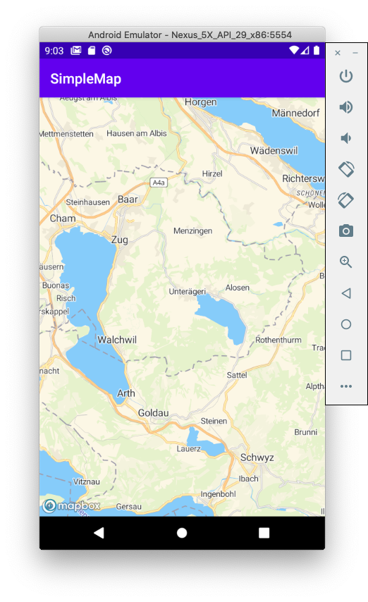

MapTiler Tutorial for Android
This tutorial describes how to create a simple Android application using Kotlin and Android SDK.
This tutorial was written for macOS
Create new project
Open Android Studio and create new project and choose Empty Activity template. In the "Language" dropdown select "kotlin" and keep minimum API SDK to 16.
Add MapLibre SDK to the project
Add MapLibre SDK to your project using Maven.
- Open the project in Android Studio.
- Open up project-level (/build.gradle) file.
-
Add bintray maven repositories to your build.gradle at project level so that you can access MapTiler packages for Android:
1. Open up module-level (/app/build.gradle) file. 1. Under dependencies, add a new build rule for the latest maplibre android-sdk.allprojects { repositories { ... maven { url = "https://dl.bintray.com/maplibre/maplibre-gl-native" } } }dependencies { ... implementation 'org.maplibre.gl:android-sdk:9.2.1' ... }
MapTiler Key
- Create MapTiler cloud account.
- Obtain the api key.
-
Add the key for MapTile key to the module-level build.gradle
android { ... defaultConfig { ... resValue "string", "mapTilerKey", "your key" } -
Open
MainActivity.kt file. Add code to read MapTilerKey from the manifest.private fun getMapTilerKey(): String? { return packageManager.getApplicationInfo( packageName, PackageManager.GET_META_DATA ).metaData.getString("com.maptiler.simplemap.mapTilerKey") }
Add the layout for the map
- Navigate to
/app/res/layoutfolder in Android Studio -
Add new layout named
activity_main.xml<?xml version="1.0" encoding="utf-8"?> <androidx.constraintlayout.widget.ConstraintLayout xmlns:android="http://schemas.android.com/apk/res/android" xmlns:app="http://schemas.android.com/apk/res-auto" xmlns:tools="http://schemas.android.com/tools" android:layout_width="match_parent" android:layout_height="match_parent" tools:context=".MainActivity"> <com.mapbox.mapboxsdk.maps.MapView android:id="@+id/mapView" android:layout_width="match_parent" android:layout_height="match_parent" /> </androidx.constraintlayout.widget.ConstraintLayout>
Initialize Map View
- Open the
MainActivity.ktfile. -
Add the member variable to hold MapView instance into
MainActivityclassprivate var mapView: MapView? = null -
Add the following code to the
onCreatemethod in order to construct map view.override fun onCreate(savedInstanceState: Bundle?) { super.onCreate(savedInstanceState) val mapTilerKey = getMapTilerKey() validateKey(mapTilerKey) val styleUrl = "https://api.maptiler.com/maps/streets/style.json?key=${mapTilerKey}"; // Get the MapBox context Mapbox.getInstance(this, null) // Set the map view layout setContentView(R.layout.activity_main) // Create map view mapView = findViewById(R.id.mapView) mapView?.onCreate(savedInstanceState) mapView?.getMapAsync { map -> // Set the style after mapView was loaded map.setStyle(styleUrl) { map.uiSettings.setAttributionMargins(15, 0, 0, 15) // Set the map view center map.cameraPosition = CameraPosition.Builder() .target(LatLng(47.127757, 8.579139)) .zoom(10.0) .build() } } }
Handle application lifecycle events
Add the following code to MainActivity in order to handle application lifecycle events
override fun onStart() {
super.onStart()
mapView?.onStart()
}
override fun onResume() {
super.onResume()
mapView?.onResume()
}
override fun onPause() {
super.onPause()
mapView?.onPause()
}
override fun onStop() {
super.onStop()
mapView?.onStop()
}
override fun onSaveInstanceState(outState: Bundle) {
super.onSaveInstanceState(outState)
mapView?.onSaveInstanceState(outState)
}
override fun onLowMemory() {
super.onLowMemory()
mapView?.onLowMemory()
}
override fun onDestroy() {
super.onDestroy()
mapView?.onDestroy()
}
